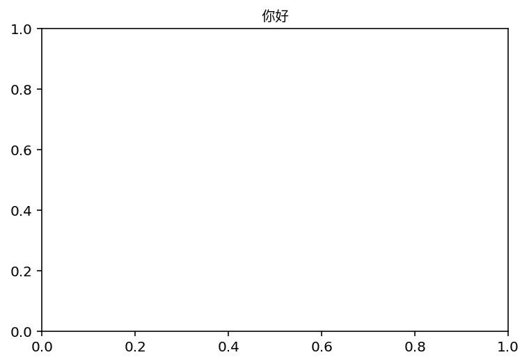

Using Chinese characters in Matplotlib
After searching from Google, here is easiest solution. This should also works on other languages:
import matplotlib.pyplot as plt %matplotlib inline %config InlineBackend.figure_format = 'retina' import matplotlib.font_manager as fm f = "/System/Library/Fonts/PingFang.ttc" prop = fm.FontProperties(fname=f) plt.title("你好",fontproperties=prop) plt.show()
Output: 
Comments
Comments powered by Disqus